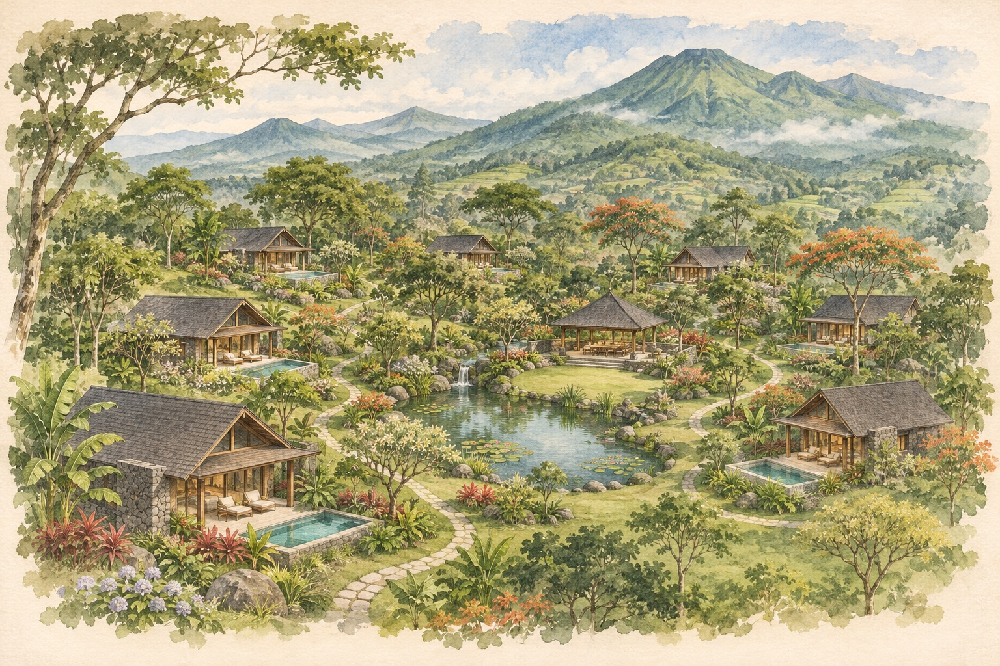

Follow the land
Study topography, access and natural drainage before establishing roads, home sites or final boundaries.
The land / Trawas, East Java
An intimate first chapter. Room for a thoughtful future.

01 / The first chapter
The approximate initial development area identified for the Mount Paradise vision. Private lodges, garden paths and modest shared gathering places establish the character of the community.
02 / Future possibility
A further expansion opportunity allows the community to evolve over time. The later phase can respond to what is learned from the first, alongside future site assessment and approvals.
A landscape first approach
Study topography, access and natural drainage before establishing roads, home sites or final boundaries.
Explore layered highland gardens, shaded walking routes and a pondside common landscape.
Develop water, wastewater, infrastructure and environmental plans alongside the architecture, at a scale suited to the site.
This watercolor communicates atmosphere and design intent. It does not prescribe plot counts, boundaries, orientation or development density.
The next design stage will bring land surveys, infrastructure studies and detailed architecture together.
Return to the vision